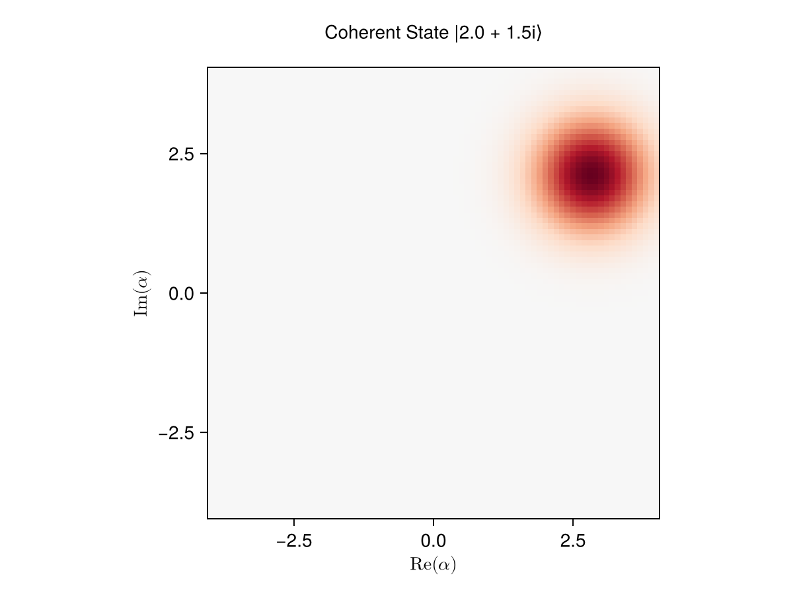
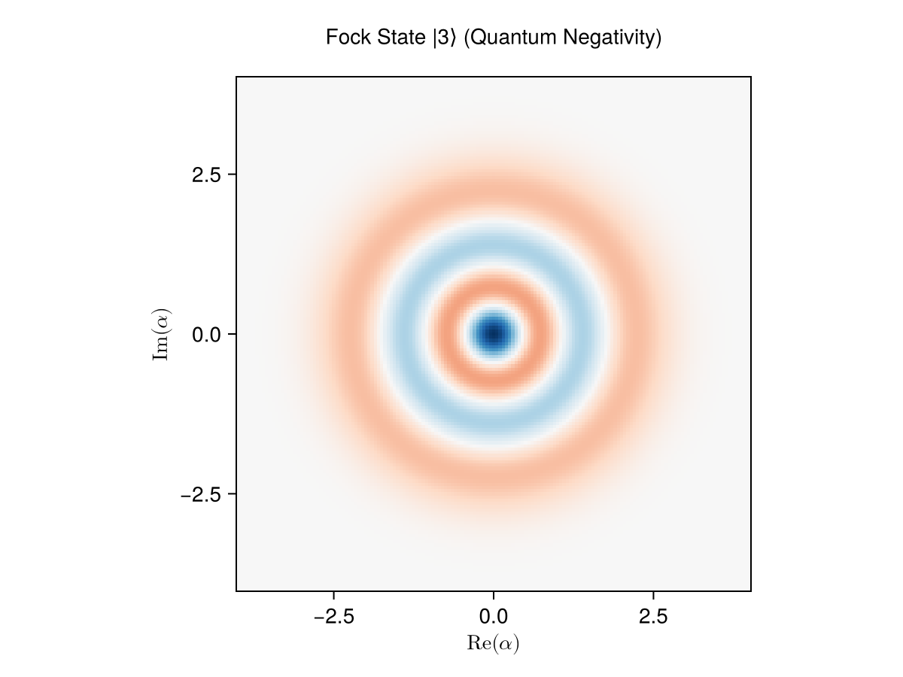
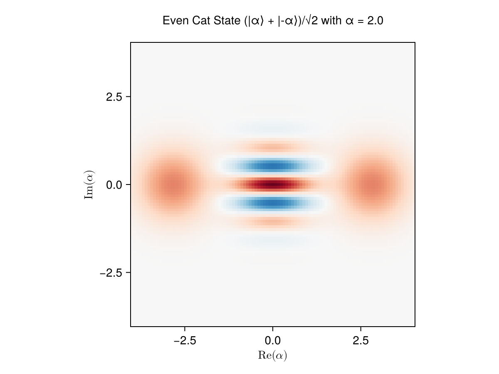
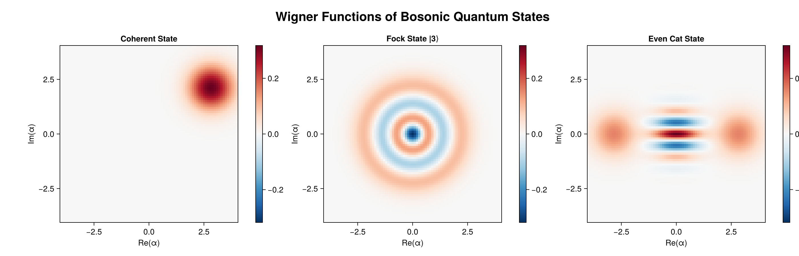
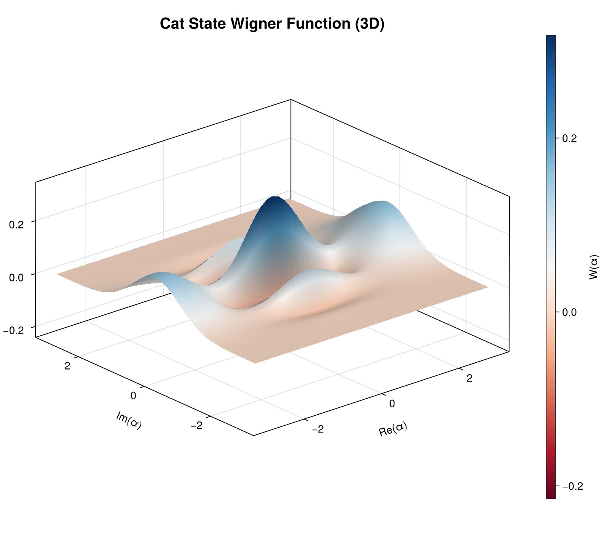
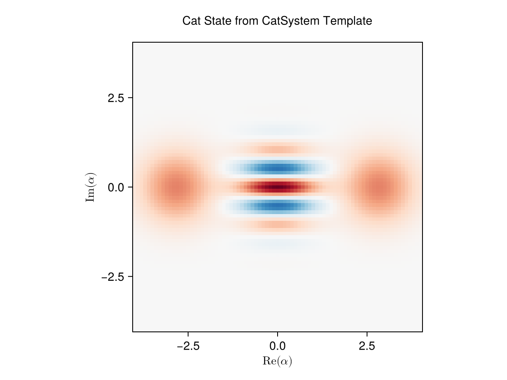

Wigner Function Visualization of Bosonic Qubits
This guide demonstrates Wigner function visualizations for bosonic quantum states. Bosonic qubits encode quantum information in the continuous-variable states of a harmonic oscillator (e.g., a superconducting cavity). The Wigner function provides a quasi-probability distribution in phase space that reveals the quantum nature of these states. See the Visualization guide for the plot_wigner / animate_wigner API introduction; this page goes deeper on the bosonic physics.
Setup
using Piccolo
using QuantumToolbox
using CairoMakie # For static plotsEach section below builds a state, wraps it in a single-timestep NamedTrajectory, and renders its Wigner function. Rather than repeat that ceremony, we capture it once — every section then varies only the physics (the state, the phase-space resolution, and the title). plot_wigner already drops a "Timestep N" label at row 0, which we overwrite with a domain title.
function wigner_panel(ket; title, res = 0.1, lim = 4.0)
traj = NamedTrajectory(
(ψ̃ = hcat(ket_to_iso(ComplexF64.(ket))), Δt = [1.0]),
timestep = :Δt,
)
fig =
plot_wigner(traj, 1; state_name = :ψ̃, xvec = (-lim):res:lim, yvec = (-lim):res:lim)
fig.attributes[:label][].text[] = title
return fig
endwigner_panel (generic function with 1 method)Mathematical Background
The Wigner function W(α) maps a quantum state |ψ⟩ to phase space coordinates (Re(α), Im(α)). For a density matrix ρ:
\[W(\alpha) = \frac{2}{\pi} \text{Tr}[\rho \hat{D}(\alpha) \hat{\Pi} \hat{D}^\dagger(\alpha)]\]
where D̂(α) is the displacement operator and Π̂ is the parity operator.
Key Properties:
- Classical states: W(α) ≥ 0 everywhere
- Quantum states: Can have negative regions (quantum interference)
- Coherent states |α⟩: Gaussian peaks centered at α
- Cat states (|α⟩ + |-α⟩)/√2: Show interference fringes
Coherent States
Coherent states are the most classical quantum states. Their Wigner functions are Gaussian peaks.
# Parameters
N = 30 # Fock space cutoff
α = 2.0 + 1.5im # Coherent state parameter
# Create coherent state
ψ_coherent = coherent(N, α)
fig_coherent = wigner_panel(
ψ_coherent.data;
title = "Coherent State |$(round(real(α), digits=1)) + $(round(imag(α), digits=1))i⟩",
)
The Wigner function shows a single Gaussian peak centered at α = 2.0 + 1.5i in phase space. These states minimize the Heisenberg uncertainty principle and are produced by ideal lasers.
Fock States
Fock states |n⟩ are energy eigenstates with exactly n photons. Higher Fock states exhibit pronounced quantum features in their Wigner functions.
# Create Fock state |3⟩
n_photons = 3
ψ_fock = fock(N, n_photons)
# Higher resolution (`res`) to capture the negative-region rings.
fig_fock = wigner_panel(
ψ_fock.data;
title = "Fock State |$n_photons⟩ (Quantum Negativity)",
res = 0.05,
)
Notice the negative regions (blue) in the Wigner function! These cannot occur in classical physics and are a signature of quantum behavior. Fock states are highly non-classical and useful for quantum sensing.
Cat States
Cat states (Schrödinger cat states) are superpositions of coherent states: |cat⟩ = (|α⟩ + |-α⟩)/√2. They exhibit beautiful interference patterns.
# Create even cat state
α_cat = 2.0 # Real alpha for symmetry
ψ_plus = coherent(N, α_cat)
ψ_minus = coherent(N, -α_cat)
# Superposition (unnormalized initially)
cat_state = ψ_plus.data + ψ_minus.data
cat_state = cat_state / norm(cat_state) # Normalize
fig_cat = wigner_panel(
cat_state;
title = "Even Cat State (|α⟩ + |-α⟩)/√2 with α = $α_cat",
res = 0.08,
)
The cat state Wigner function shows two Gaussian peaks at ±α connected by interference fringes. These fringes are quantum interference between the two coherent state components. Odd cat states (|α⟩ - |-α⟩)/√2 have different fringe patterns.
Comparison Panel
Create a multi-panel figure comparing different bosonic states.
fig_comparison = Figure(size = (1400, 450), fontsize = 14)
# Coherent state
ax1 = Axis(
fig_comparison[1, 1],
xlabel = "Re(α)",
ylabel = "Im(α)",
title = "Coherent State",
aspect = DataAspect(),
)
xvec = -4:0.1:4
yvec = -4:0.1:4
W_coherent = transpose(wigner(ψ_coherent, xvec, yvec))
# Match the single-panel `plot_wigner` convention (QuantumToolbox): a reversed
# `:RdBu` map (red = positive, blue = negative) over a symmetric, zero-centered
# range so that white = 0 and the same color means the same value in every panel.
wlim_coherent = maximum(abs, W_coherent)
heatmap!(
ax1,
xvec,
yvec,
W_coherent,
colormap = Reverse(:RdBu),
colorrange = (-wlim_coherent, wlim_coherent),
)
Colorbar(
fig_comparison[1, 1, Right()],
limits = (-wlim_coherent, wlim_coherent),
colormap = Reverse(:RdBu),
)
# Fock state
ax2 = Axis(
fig_comparison[1, 2],
xlabel = "Re(α)",
ylabel = "Im(α)",
title = "Fock State |3⟩",
aspect = DataAspect(),
)
W_fock = transpose(wigner(ψ_fock, xvec, yvec))
wlim_fock = maximum(abs, W_fock)
heatmap!(
ax2,
xvec,
yvec,
W_fock,
colormap = Reverse(:RdBu),
colorrange = (-wlim_fock, wlim_fock),
)
Colorbar(
fig_comparison[1, 2, Right()],
limits = (-wlim_fock, wlim_fock),
colormap = Reverse(:RdBu),
)
# Cat state
ax3 = Axis(
fig_comparison[1, 3],
xlabel = "Re(α)",
ylabel = "Im(α)",
title = "Even Cat State",
aspect = DataAspect(),
)
ψ_cat_qobj = QuantumObject(cat_state)
W_cat = transpose(wigner(ψ_cat_qobj, xvec, yvec))
wlim_cat = maximum(abs, W_cat)
heatmap!(
ax3,
xvec,
yvec,
W_cat,
colormap = Reverse(:RdBu),
colorrange = (-wlim_cat, wlim_cat),
)
Colorbar(
fig_comparison[1, 3, Right()],
limits = (-wlim_cat, wlim_cat),
colormap = Reverse(:RdBu),
)
# Overall title
Label(
fig_comparison[0, :],
"Wigner Functions of Bosonic Quantum States",
fontsize = 22,
font = :bold,
)
fig_comparison
3D Surface Plot
For presentations, 3D surface plots can be more visually striking. These static surfaces render with the CairoMakie backend already loaded above; for an interactive, rotatable view, load GLMakie locally (using GLMakie). The docs build renders static images only.
# Create cat state Wigner data
xvec_3d = -3:0.15:3
yvec_3d = -3:0.15:3
W_cat_3d = transpose(wigner(ψ_cat_qobj, xvec_3d, yvec_3d))
# Create 3D surface
fig_3d = Figure(size = (800, 700))
ax_3d = Axis3(
fig_3d[1, 1],
xlabel = "Re(α)",
ylabel = "Im(α)",
zlabel = "W(α)",
title = "Cat State Wigner Function (3D)",
titlesize = 20,
aspect = (1, 1, 0.5),
)
surface!(ax_3d, xvec_3d, yvec_3d, W_cat_3d, colormap = :RdBu, shading = true)
Colorbar(fig_3d[1, 2], limits = extrema(W_cat_3d), colormap = :RdBu, label = "W(α)")
fig_3d
The 3D surface makes the quantum interference pattern more dramatic. The negative "valleys" in the Wigner function are clearly visible as dips below the zero plane.
Animation: Rotating Cat State
Animate a coherent state rotating in phase space to create a "rotating cat". Interactive :inline playback requires GLMakie when run locally; the docs build doesn't load it, so the animate_wigner call below is left commented. Use mode = :record with CairoMakie to save the animation to a file.
# Create time-evolving trajectory
T = 60
ω = 2π
times = range(0, 2π/ω, length = T)
α_amplitude = 2.5
# Generate rotating cat states
kets_rotating = map(times) do t
α_t = α_amplitude * exp(im * ω * t)
ψ_plus_t = coherent(N, α_t).data
ψ_minus_t = coherent(N, -α_t).data
cat_t = ψ_plus_t + ψ_minus_t
cat_t / norm(cat_t)
end
traj_rotating = NamedTrajectory(
(ψ̃ = hcat(ket_to_iso.(kets_rotating)...), Δt = fill(times[2] - times[1], T)),
timestep = :Δt,
)
# Animate (uncomment to run - requires GLMakie and interactive display)N = 60, (ψ̃ = 1:60, → Δt = 61:61)figanim = animatewigner( traj_rotating; fps = 20, xvec = -4:0.15:4, yvec = -4:0.15:4, mode = :inline # Use :record to save to file )
When running interactively with GLMakie, this creates a real-time animation showing the cat state rotating in phase space. The interference fringes rotate with the cat state components. Uncomment the animation code to see it! Use mode = :record, filename = "cat_rotation.mp4" to save to file.
Using CatSystem Template
Piccolo provides a CatSystem template for cat qubit dynamics with realistic Hamiltonian parameters.
# Create cat system. We keep `cat_levels` and `buffer_levels` as locals so
# we can slice the cavity subspace after; reading them back off the system
# would yield Float64 (params are stored as a homogeneous float tuple).
cat_levels = 20
buffer_levels = 3
sys_cat = CatSystem(
g2 = 0.36,
χ_aa = -7e-3,
χ_bb = -32,
χ_ab = 0.79,
κa = 53e-3,
κb = 13,
cat_levels = cat_levels,
buffer_levels = buffer_levels,
)
# Create target cat state using coherent_ket helper
α_target = 2.0
# Construct even cat state in system Hilbert space
ψ_plus_sys = kron(coherent_ket(α_target, cat_levels), [1.0; zeros(buffer_levels - 1)])
ψ_minus_sys = kron(coherent_ket(-α_target, cat_levels), [1.0; zeros(buffer_levels - 1)])
cat_sys = (ψ_plus_sys + ψ_minus_sys) / norm(ψ_plus_sys + ψ_minus_sys)
# Visualize (reduced subspace for cat cavity only).
# `cat_sys` lives in the `kron(cavity, buffer)` space, ordered so that the
# buffer index varies fastest. With the buffer in |0⟩, the cavity amplitudes
# sit at every `buffer_levels`-th entry — slicing `[1:cat_levels]` would mix
# cavity/buffer indices and scramble the state. Take the cavity marginal:
cat_subspace = cat_sys[1:buffer_levels:end] # cavity levels with buffer in |0⟩
fig_cat_sys = wigner_panel(cat_subspace; title = "Cat State from CatSystem Template")
The CatSystem template provides a realistic model of cat qubit hardware with buffer mode for two-photon processes. It includes Kerr nonlinearities and dissipation. See the system templates guide for optimal control examples.
Saving Figures
Export publication-ready figures in various formats.
# Save as PNG (high resolution)save("wignercatstate.png", figcat, pxper_unit = 2)
# Save as PDF (vector graphics for papers)save("wignercatstate.pdf", fig_cat)
# Save as SVG (web/presentations)save("wignercatstate.svg", fig_cat)
# Save comparison panelsave("wignercomparison.png", figcomparison, pxperunit = 2)
- Use
px_per_unit = 2or higher for high-DPI displays - PDF format is best for LaTeX documents
- SVG is ideal for web presentations and blogs
- Adjust
colormapto match your publication style (:RdBu,:viridis, etc.)
Summary
This guide demonstrated:
- Coherent states: Gaussian Wigner functions (most classical)
- Fock states: Negative regions indicating quantum behavior
- Cat states: Interference fringes from quantum superposition
- Comparison plots: Multi-panel publication figures
- 3D visualization: Dramatic rendering of quantum features
- Animation: Time evolution of quantum states
- CatSystem integration: Using Piccolo's templates for realistic dynamics
The Wigner function is a powerful tool for visualizing and understanding bosonic quantum states. Negative regions and interference patterns directly reveal the quantum nature of these states, making them invaluable for quantum control and quantum information processing.
Next Steps
- Explore Quantum Systems for cat qubit control templates
- See Visualization for the broader plotting API
- Walk through the Quickstart Guide for an end-to-end solve
References
- Wigner, E. P. (1932). "On the Quantum Correction For Thermodynamic Equilibrium"
- Mirrahimi, M. et al. (2014). "Dynamically protected cat-qubits: a new paradigm"
- Ofek, N. et al. (2016). "Extending the lifetime of a quantum bit with error correction"
This page was generated using Literate.jl.